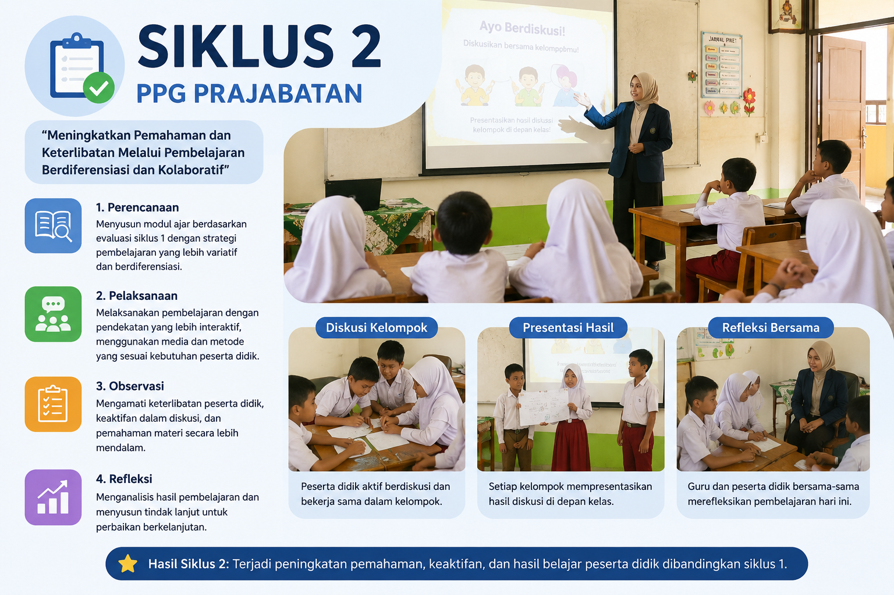

Artefak
Artefak
Siklus 1

Dokumentasi kegiatan pembelajaran pada siklus 1 Materi Matematika tentang Analisis Data dan Peluang Mengurutkan, membandingkan, menyajikan, dan menganalisis data banyak benda dan data hasil pengukurandalam bentuk gambar, piktogram, diagram batang, dan tabel frekuensi untuk mendapatkan informasi dengan model PBL dan metode Diskusi kelompok, Tanya Jawab, Observasi, Presentasi, Penugasan.
Siklus 2

Dokumentasi kegiatan pembelajaran pada siklus 2 Materi Matematika tentang Analisis Data dan Peluang Mengurutkan, membandingkan, menyajikan, dan menganalisis data banyak benda dan data hasil pengukurandalam bentuk gambar, piktogram, diagram batang, dan tabel frekuensi untuk mendapatkan informasi dengan model PBL dan metode Diskusi kelompok, Tanya Jawab, Observasi, Presentasi, Penugasan, Dadu.